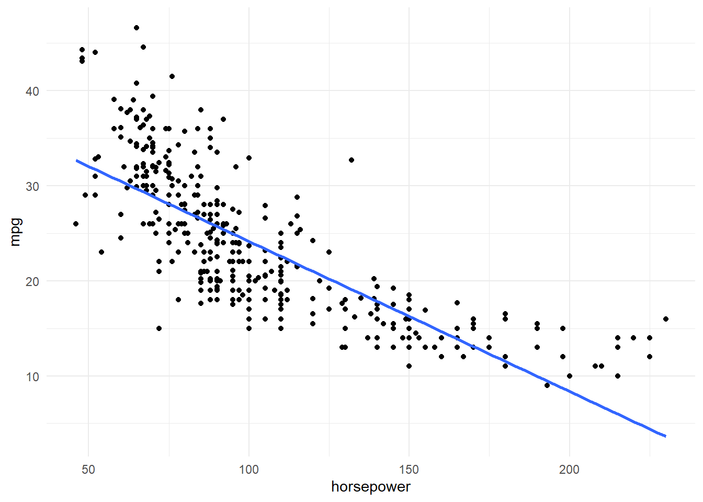
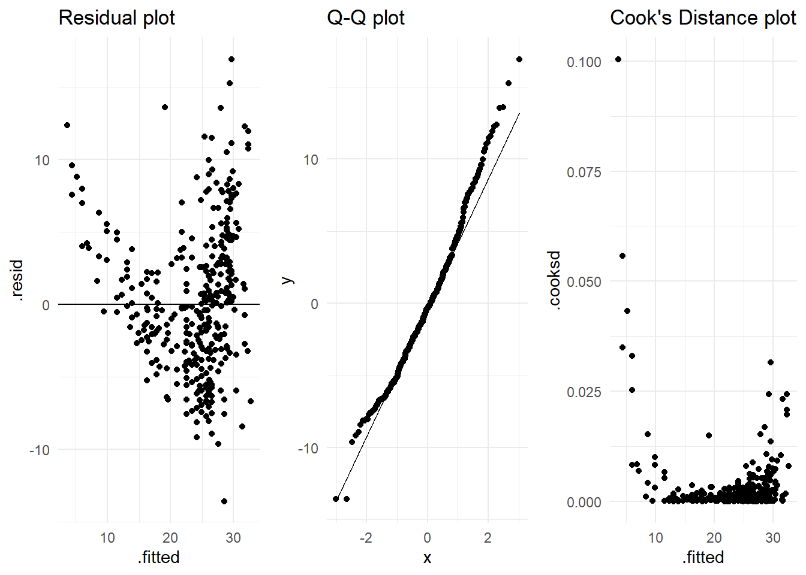

library(ISLR2)
library(tidyverse)
library(broom)
library(janitor)
library(gridExtra)
theme_set(theme_minimal())Chapter 3 - Linear Regression - Exercises
Set workspace
Exercise 8)
A)
Auto |> view()
# First, some plotting
Auto |>
ggplot(aes(horsepower, mpg)) +
geom_point() +
geom_smooth(method = "lm", se = FALSE)
# Fit model
auto_model <- lm(mpg ~ horsepower, data = Auto)
summary(auto_model)
Call:
lm(formula = mpg ~ horsepower, data = Auto)
Residuals:
Min 1Q Median 3Q Max
-13.5710 -3.2592 -0.3435 2.7630 16.9240
Coefficients:
Estimate Std. Error t value Pr(>|t|)
(Intercept) 39.935861 0.717499 55.66 <2e-16 ***
horsepower -0.157845 0.006446 -24.49 <2e-16 ***
---
Signif. codes: 0 '***' 0.001 '**' 0.01 '*' 0.05 '.' 0.1 ' ' 1
Residual standard error: 4.906 on 390 degrees of freedom
Multiple R-squared: 0.6059, Adjusted R-squared: 0.6049
F-statistic: 599.7 on 1 and 390 DF, p-value: < 2.2e-16# Predictions
predict(auto_model,
tibble(horsepower = c(98)),
interval = "confidence") fit lwr upr
1 24.46708 23.97308 24.96108predict(auto_model,
tibble(horsepower = c(98)),
interval = "prediction") fit lwr upr
1 24.46708 14.8094 34.12476i-iii. It is clear from our plot there is a relationship between miles per gallon and horsepower; as horsepower increases miles per gallon decreases. Our regression result say the same; for each increase in horsepower, there is a - 0.158 decrease in miles per gallon. The relationship is negative.
iv. The predicted miles per gallon usage based on our model with a horsepower of 98, is 24.5 (95 % CI: [23.97, 24,96]; PI: [14.81, 34.12]).
B)
Auto |>
ggplot(aes(horsepower, mpg)) +
geom_point() +
geom_smooth(method = "lm", se = FALSE)C)
augmented_auto_model <- augment(auto_model)
# Resdiual plot
res <- augmented_auto_model |>
ggplot(aes(x = .fitted, y = .resid)) +
geom_point() +
geom_hline(yintercept = 0) +
labs(title = "Residual plot")
# Q-Q plot
qq <- augmented_auto_model |>
ggplot(aes(sample = .resid)) +
geom_qq() +
geom_qq_line() +
labs(title = "Q-Q plot")
# Cooks's Distance plot
cooks <- augmented_auto_model |>
ggplot(aes(x = .fitted, y = .cooksd)) +
geom_point() +
labs(title = "Cook's Distance plot")
grid.arrange(res, qq, cooks, nrow = 1)
The main thing I’m concerned about from these diagnostic plots is the curvature shown in the residual plot. It may indicate that a polynomial regression is more suitable than a linear regression for these data.